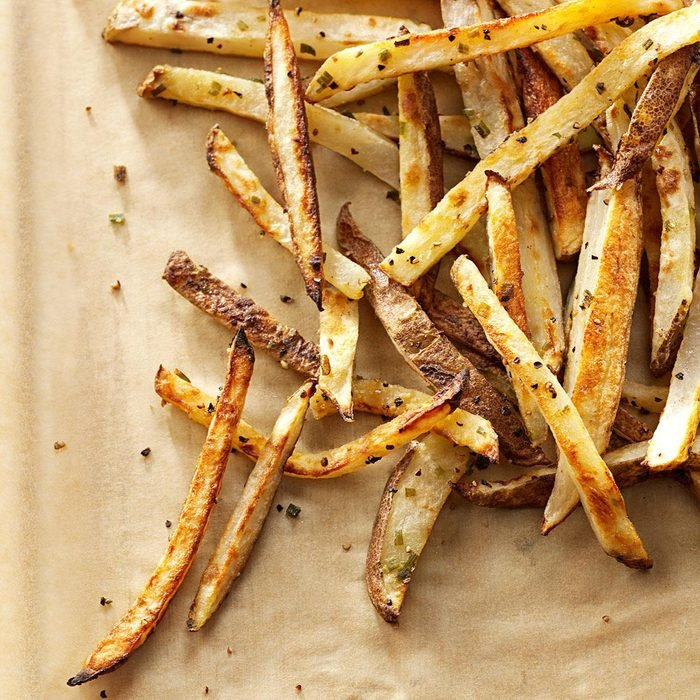

Garlic baked Fries

Freshly baked Fries
Small serving of homemade potato fries lightly sprinkled with garlic
Ingredients
- 4 medium russet potatoes
- 1 tablespoon olive oil
- 4 teaspoons dried minced chives
- 1/2 teaspoon salt
- 1/2 teaspoon garlic powder
- 1/4 teaspoon pepper
Steps
- Preheat oven to 450°. Cut potatoes into 1/4-in. julienne strips. Rinse well and pat dry.
- Transfer potatoes to a large bowl. Drizzle with oil; sprinkle with the remaining ingredients. Toss to coat. Arrange in a single layer in two 15x10x1-in. baking pans coated with cooking spray.
- Bake 20-25 minutes or until lightly browned, turning once.
Back to homepage